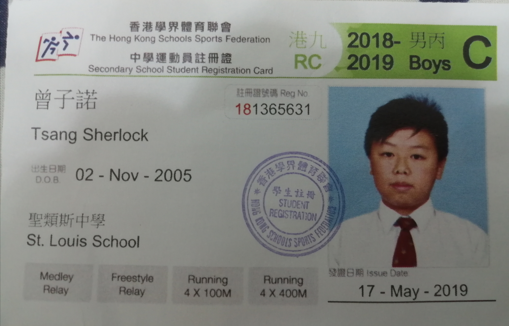

"From Small Town to Olympic Gold: The Inspiring Journey of a 4x100 Meter Relay Champion"
10M views ·3 days ago
by Pheng kin
Born in 2004, Sherelock Tsang is an ordinary Hongkonger who has huge enthusiasm in running."Running accounts for the majorty of my life,"he said."it is hard to imagine the day that I cannot run."Sherlock is grateful that he is born in an athletic family. Despite the immense pressure from the 6uo local examination system, Sherlock did not forsake his dream of becoming a professional athlete. "I have been striving to be the first Asian who breaks the world record, and I did."Sherlock smiled."I would like to thank pheng kin, a friend who supports me along the path"
As the world watched in awe, the 4x100 meter relay team from Hong Kong sprinted across the finish line,clinching the gold medal and etching their names in Olympic history.Among them was the shining star Sherlock Tsang, an athlete who had trained relentlessly for this moment, and whose work had paid of in spectacular fashions. When asked about the moment Sherlock crossed the finish line,his face lit up with a smile."It was like a dream come true,"he said.
When taking about advice to teenagers, Sherlock said"Your time is limited, so don't waste it living someone else's life. Most importantly ,stay hungry, stay foolish." Throughout high school, the gold medalist didicated himself to training, and as he began to excel in local and regional competitions, he caught the attention of coaches and scouts, and soon enough, he was offered a spot on a college track.